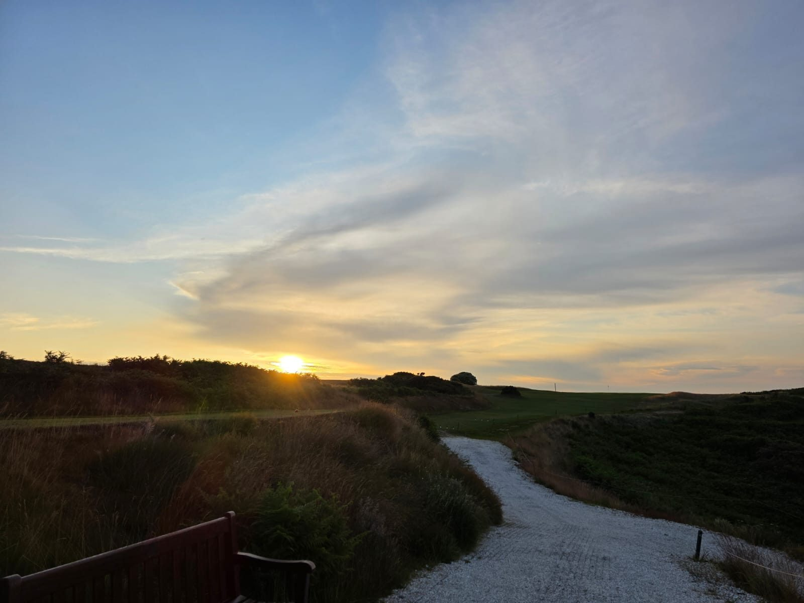

Itinerary Ideas · Norfolk
Itinerary Ideas · Norfolk
Three days is the sweet spot for a Norfolk golf trip. Long enough to play the courses that matter, short enough to fit around most people's schedules. Done well, it feels like a week — because the variety here is extraordinary. In three days you can play a clifftop links with views to the horizon, a championship course ranked among England's finest, and a tidal links that you have to time against the sea to reach.
Playing near Norwich? Our full guide covers every course worth your time around the city — Golf Near Norwich: A Complete Course Guide.
This is our blueprint. It can be adapted — different accommodation, different tee times, an extra dinner stop — but the bones of it work. We have refined it across dozens of trips.
The north Norfolk coast is most easily reached by road from London (around two hours via the A11 and A140) or by train to Norwich, from where a hire car takes you to Cromer or Wells-next-the-Sea in under an hour. We recommend arriving Sunday evening to make the most of Monday's golf — the drive on a Sunday afternoon has a particular quality on this road, through the Breckland forests and into the flatter, greener Norfolk landscape.
For the three-day circuit, base yourself on the north coast — ideally between Cromer and Wells. This puts you within twenty minutes of all three courses and means you can walk into a village pub after the round without needing a car.

Day One · Monday
Start at Royal Cromer. There are practical reasons for this — it is the closest course to most arrival points on the east of the coast — but the real reason is that Royal Cromer is the right course to set the tone for the trip. The moment you walk onto the first tee and see the North Sea below the cliff, you understand that you are somewhere genuinely special.
Book a morning tee time if possible — the light on the clifftop holes in the morning is unlike anything you will find in the afternoon, and you will want the rest of the day to explore Cromer itself. The town is worth an unhurried hour: the pier, the crab shack on the front, the Victorian terraces above the beach.
For dinner, the No. 1 Cromer does excellent locally-sourced fish. Book in advance in season.
Day Two · Tuesday
Drive west along the coast road to Hunstanton — one of the great drives in English golf, through the salt marshes and villages of the north Norfolk coast. Hunstanton Golf Club sits at the top of the Wash, a traditional links of real quality that has hosted multiple major amateur championships and is consistently ranked among the top 20 courses in England.
It is longer and more demanding than Royal Cromer, with a routing that takes you out into the dunes and back against the prevailing wind. The par threes are exceptional — varied in length, varied in character, all requiring genuine precision. Allow five hours for the round and bring your patience for the back nine, which is where Hunstanton tends to settle scores.
The town of Hunstanton has a slightly different character to Cromer — broader, more open, facing west across the Wash rather than east over the North Sea. Sunset from the beach here, on a clear evening, is worth arriving early for.
Day Three · Wednesday
The final round is the one that requires the most planning, and rewards it most generously. Royal West Norfolk Golf Club at Brancaster sits at the end of a tidal causeway — accessible only at low tide, which varies from day to day. Check the tide times before you book your tee time, and allow an hour either side of low tide to cross.
The course beyond the causeway is, by most serious assessments, one of the finest links in the British Isles. It is exposed, windswept, and routed through the dunes with a directness and economy that feels very old. There are no weak holes. The walk back across the causeway after the round, with the marsh birds and the afternoon light on the water, is one of those moments that golf trips are made of.
Leave time for a late lunch at the Brancaster Staithe sailing club or the White Horse at Brancaster before heading south.
"Three days, three courses, three completely different experiences of what links golf in England can be. It is the most concentrated version of what this part of the world does best."
Wells-next-the-Sea and Burnham Market sit at the geographic centre of all three courses and make the best bases. Wells has more character and better pubs; Burnham Market (known locally as Chelsea-on-Sea) has better restaurants and more polish. Both are within easy reach of all three courses. We have accommodation partners in both — see our recommendations here.
A hire car is essential. The north Norfolk coast has no meaningful public transport between the golf courses, and the roads between them — particularly the A149 coast road — are part of the pleasure of the trip. Allow 30–45 minutes between courses to account for the pace of the road and the temptation to stop at the seal colony at Blakeney Point.
If you have a fourth day, Sheringham Golf Club — between Cromer and Wells — adds a clifftop course of real character to the circuit. A fifth day opens up the possibility of heading south to Royal Worlington in Suffolk, Bernard Darwin's "sacred nine," which closes any east coast golf trip in fitting style. We build all of these as part of our longer itineraries.
Tee times, accommodation, transfers and any extras. Tell us your dates and group size and we'll put together a full proposal — no obligation.
Plan your trip